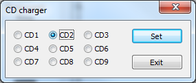

Preface:
When first Win32 games appeared, the PC architecture already included a CD drive. Then, a very common game structure was to install the program and a few critical data on HD and leave all music (in mixed-mode CD roms) and other large multimedia data on the CD. This way, checks for the presence of the CD in the drive were a very practical and used DRM technique.
Nowadays, though some of these old games could run on modern platforms, either natively or with support of compatibility shims, emulators or tools like DxWnd, they face the problem of the lack of a CD drive: modern computers are more and more powerful, light and thin, so a CD drive is almost always sacrified on any portable pc. Another problem of these games is that they often relied on the possibility to access the first (often unique) HD on the root folder C:\ and therefore they didn't consider the possibility of quite longer pathnames of files moved to the user's area of a modern file system. Some games don't work if not installed in a c:\ subfolder, but this possibility is now usually excluded for security reasons. Here comes DxWnd with a set of features that will help bypassing these two problems by building virtual (or fake) CD and HD drives. It should be remarked that these features work at the window system libraries level (mostly kernel32.dll) and don't deal with more sophisticated copy protection mechanisms that were developed soon after, based on trickier side effects like the detection of CRC errors on disk or even stronger techniques. In these cases, a good CD drive emulator can provide a more precise simulation. But neverthless in many cases the fake devices will prove useful to transfer the files from a CD to your HD and build a game setting with all features, no cracked exe and requiring no CD or CD drive to run properly. This may also work togerther with DxWnd CD audio tracks emulations to handle CD music in addition to the CD file system.Tutorial:
This tutorial will help to build your own game settings.
1: the first step is to install the game on HD, possibly chosing the option to install the minimum set of files: since the virtual CD is on HD, there's no practical advantage to place the same files on HD twice. Also, take note of the CD label, it may prove useful later (for instance, "Drift: When Worlds Collide" checks for the CD label equal to "DRIFT"). 2: then, configure DxWnd to run the game the way you prefer, but still having the CD in the drive. You won't need to handle two problems at a time, so be sure that everything works ok before trying to virtualize the CD. 3: as a third step, create a folder for the virtual CD files (a 'cd' subfolder of the game install directory will be ok in most cases) and copy there the content of the whole CD. Then configure the virtual CD in DxWnd (if you picked the suggestion, the path could be abbreviated as "?\cd\", where '?' stands for the game folder. It is strongly recommended that the virtual drive letter DOES NOT MATCH that of an existing drive, or there could be some confusion. 4: now remove the physical CD (or stop the CD emulation, in case you mounted a virtual CD) and try running the game. It may work, but it also may not. 5: Usually CD checks are placed in the program code executed BEFORE the creation of th first window, so in case of failure set an early hook mode (for instance "Inject suspended process"). The game may also check for the CD label, try setting that value in the CD label DxWnd field. Now try again. 6: some games (for instance "Sentinel Returns") may perform a CD check using MCI calls to query the number and type of CD tracks. In this case it would be necessary to extract the audio tracks and enable CD audio emulation (see the dedicated tutorial). 7: if the game still doesn't start and asks for the presene of the game CD, set the log options enabling these (and only these!) flags: "Overwrite", "DxWnd hacks", "System libs", "Debug". If you enabled CD audio emulation, also check the logging "Sound" flag. Run the game again and kill it (with DxWnd kill command) at the no-CD dialog box, then read the dxwnd.log file: inside there could be some clue about what's wrong. In any case, post the logfile on the SF portal, gho will be happy to read and try making it work.CD charger:
If the program needs to access files from different CDs you can use the "CD charger" panel to switch the CD inserted in the virtual drive. If the program configuration includes also virtualization of the CD audio, the virtual CD audio tracks will be updated accordingly.
The switch will take place every time a new pathname will be referenced, so unlike what would happen with real disks (or even with mounted iso images) there is no risk of I/O errors on files when their CD is swapped out.